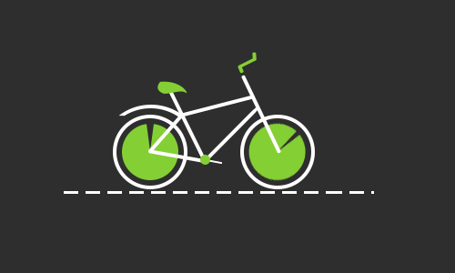

<p>
    image-cropperjs works!
</p>

<!-- <div>
    <input type="file" accept="image/jpeg" (change)="getImgUrl($event)">

    <div class="box">
        
    </div>

    <button (click)="rotateRight()">rotate</button>
</div> -->


<div id="container1">

    
    <input type="file" (change)="fileChangeEvent($event)" />

    <image-cropper [imageChangedEvent]="imageChangedEvent" [imageBase64]="base64String" [maintainAspectRatio]="true" [aspectRatio]="1 / 1" [resizeToWidth]="200" resizeToHeight="200" format="png" (imageCropped)="imageCropped($event)" (imageLoaded)="imageLoaded()"
        (cropperReady)="cropperReady()" (loadImageFailed)="loadImageFailed()"></image-cropper>

    

</div>